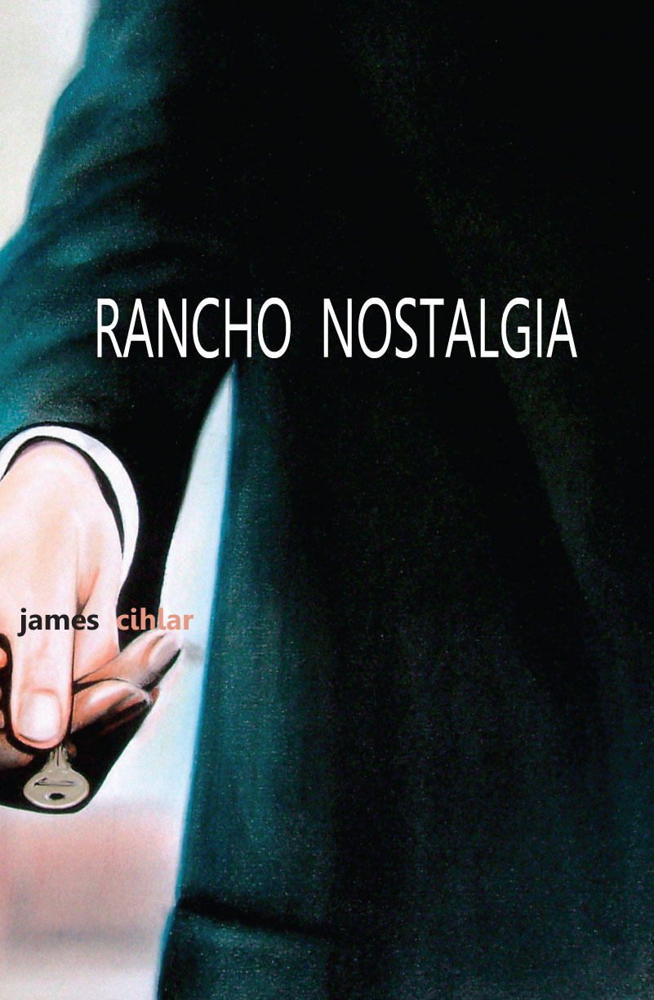
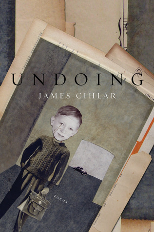

James Cihlar is an editor, writer, and teacher living in St. Paul, Minnesota. He is the author of the poetry books Rancho Nostalgia (Dream Horse Press, 2013) and Undoing (Little Pear Press, 2008), and the chapbooks A Conversation with My Imaginary Daughter (Bloom, 2013), and Metaphysical Bailout (Pudding House Press, 2010). His writing has been published in the American Poetry Review, Court Green, Smartish Pace, The Rumpus, Prairie Schooner, Lambda Literary Review, and Forklift, Ohio. He is the recipient of a Glenna Luschei Award from Prairie Schooner, the 2012 Bloom Chapbook Prize, and two Minnesota State Arts Board Fellowships for Poetry.
"Keep reaching into the past/To grab something new"
“James Cihlar’s poems in Rancho Nostalgia contain the twisted love of a stage mom and the nervous energy of an Oscar Show producer. Here’s a cinephilic poet who can pretty much direct anything, even the transformation of Sherlock Holmes into a ‘wharf rat.’ Of course, Cihlar can’t shut off his camera. A woman’s face ‘is the Wrigley building lit at night.’ Teddy Roosevelt and Winston Churchill are ‘rag dolls in future’s toy box.’ And Cihlar’s alter ego ‘parades down Wall Street wearing a diadem of wheat.’ At one point, he flatly says, ‘Inspiration comes when we don’t want it.’ Lucky for us he has the conviction to be willfully misguided. Every page in this book possesses at least one tiny miracle.” —Steve Fellner, author of The Weary World Rejoices
"Life starts on the inside, / with the burnt sienna tile of the fireplace, / the leaded glass window, the maple floors."
James Cihlar's debut collection is a generous yet unflinching portrait of the unraveling of an American family. Always honest and brilliantly crafted, these poems face life head-on. The poet subtly pulls back the layers of myth and willful misunderstanding that trap so many of us in unfulfilled dreams, and exposes the true and sometimes beautiful lives that lie underneath. Cihlar's poems are mirrors, filled with flashes of the wonderful and the dreadful, the complicated and conflicted faces that we each wear, and the masks behind which we sometimes hide. Highly recommended! - Minnesota Poetry Reader
“Unity is the moment when living becomes history.”
Winner of the 2012 Bloom Chapbook Prize for Poetry, selected by contest judge Lyrae Van Clief-Stefanon.
A wonderful chapbook that centers on films from the 30's - '50's and uses them as metaphors for understanding contemporary life. While reflecting back on the images, characters, and plots from old films, and the stars who populated them, Cihlar feeds his own experiences through the lenses of these classics, and the result is a doubling - the past projected onto the present, and the present projected onto the past.
"When the world rights itself, bears will turn into bulls"
After the recent Wall Street crash, we struggled to understand what had happened economically. Bankers, politicians, and newscasters contorted language in new ways to express and ultimately obscure and perpetuate an old story of American life: the rich get richer and the poor get poorer. The eighteen poems in this chapbook highlight the bizarre and at times humorous ways in which language is perverted to support power, even while showing how language and story insist on telling on a greater truth. As Modern Maturity asks, "What if one day the men you trusted/ walked out, and suddenly,/ you woke up?"

The following anthologies include James's work:
American Society: What Poets See, Edited by Robert S. King (Future Cycle Press, 2012)
Divining Divas, Edited by Michael Montlack (Lethe Press, 2012)
American Tensions: Literature of Identity and the Search for Justice, Edited by William Reichard (New Village Press, 2011)
Collective Brightness: LGBTIQ Poets on Faith, Religion, and Spirituality, Edited by Kevin Simmonds (Sibling Rivalry Press, 2011)
The Heart of All That Is: Reflections on Home, Edited by Jim Perlman, Deborah Cooper, Mara Hart, and Pamela Mittelfelhdt (Holy Cow! Press, 2013)
Two Weeks: A Digital Anthology of Contemporary Poets, Edited by Ash Bowen and Johnathon Williams (Linebreak.org: 2011)
The Wind Blows, The Ice Breaks, Edited by Ted Bowman and Elizabeth Bourque Johnson (Nodin Press, Minneapolis: 2010)
Nebraska Presence: A Poetry Anthology, Edited by Greg Kosmicki and Mary K. Stillwell (Backwaters Press, 2007)
Regrets Only, Edited by Martha Manno (Little Pear Press, 2006)
Aunties: Thirty-Five Writers Celebrate Their Other Mother, Edited by Ingrid Sturgis, (Ballantine, 2004)
The following independent bookstores carry James Cihlar's publications:
Common Good Books
38 S. Snelling (Snelling and Grand)
St. Paul, MN 55105
SubText: A Bookstore
165 Western Avenue North
Saint Paul, MN 55102
Birchbark Books
2115 West 21st St
Minneapolis, MN 55405
James's work is also available for online purchase: